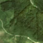
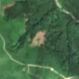

2,4 ha · Bistra Păltinei, com. Jina
văzută schimbată prima dată pe 9 iun. 2026


Autorizația cea mai apropiată nu acoperă tăierea: schimbarea cade în afara parcelei autorizate.
APV 2500071100540 · Ocolul Silvic Miercurea Sibiului, valabilă 5 feb. 2026 – 15 oct. 2026, la 242 m
Terenul: pădure de stat, după amenajamentul silvic publicat.
Ce se vede în poze: În poza detaliată și în «înainte», zona marcată era acoperită de pădure deasă de conifere. În «după» apare un petic de pământ gol, de culoare roz-bej, cu margini destul de clare, în timp ce pădurea din jur rămâne verde, deci arborii au fost tăiați.
în arie protejată: Frumoasa